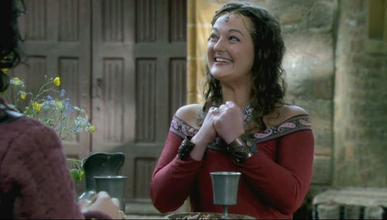
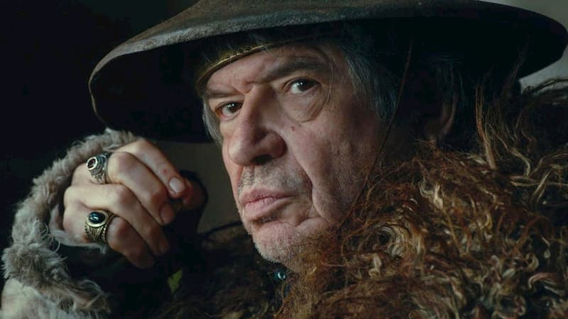

1 / 5
Arthur
Roi de Logres, Arthur règne de façon juste et équitable sur les royaumes fédérés d’Irlande, Carmélide, Calédonie, Orcanie, pays de Galles, Gaunes, Armorique et Aquitaine. Officiellement sous la domination de Rome, Arthur est en réalité presque totalement libre de ses actes ; il entretient une relation relativement cordiale avec les derniers occupants romains, sans toutefois se laisser dominer.
2 / 5

Guenièvre
Guenièvre, reine de Bretagne, est la femme d’Arthur. Dans Kaamelott, elle est naïve, pieuse, spontanée et a souvent des idées saugrenues.Le tavernier l’a qualifiée de « con comme une chaise » .Elle est aussi souvent le personnage par lequel passent les idées féministes de l’auteur.Guenièvre est très superstitieuse et a peur de l’orage, car c’est la marque de la colère des dieux .
3 / 5
Lancelot
Lancelot du Lac est l’un des meilleurs chevaliers de la table ronde et bras droit d'Roi Arthur , Lancelot prend peu à peu ses distances avec Kaamelott, jugeant ses pairs incompétents et indignes de la quête du graal. Il se rebelle contre Arthur dans le livre IV au cours duquel il vit avec Guenièvre.
4 / 5
Perceval
Perceval de Galles, souvent perçu comme un personnage idiot, est en fait simplement naïf mais lucide. Alexandre Astier déclare:« Perceval, je ne l'écris pas comme un débile, mais comme un enfant, et c'est pour ça que j'ai de la tendresse pour lui ». Perceval est chevalier de la Table ronde et originaire de Caerdydd (actuellement Cardiff), au Pays de Galles.
5 / 5

Léodagan
Inspiré du Léodagan des légendes arthuriennes, il est le roi du royaume de Carmélide et fait partie des chevaliers de la Table Ronde. Il est présent dans certaines versions des légendes arthuriennes. Dans la fiction, Léodagan (dit « le Sanguinaire ») est le père d'Yvain et de la reine, donc le beau-père du roi Roi Arthur .
❮
❯